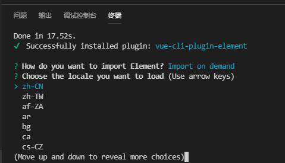
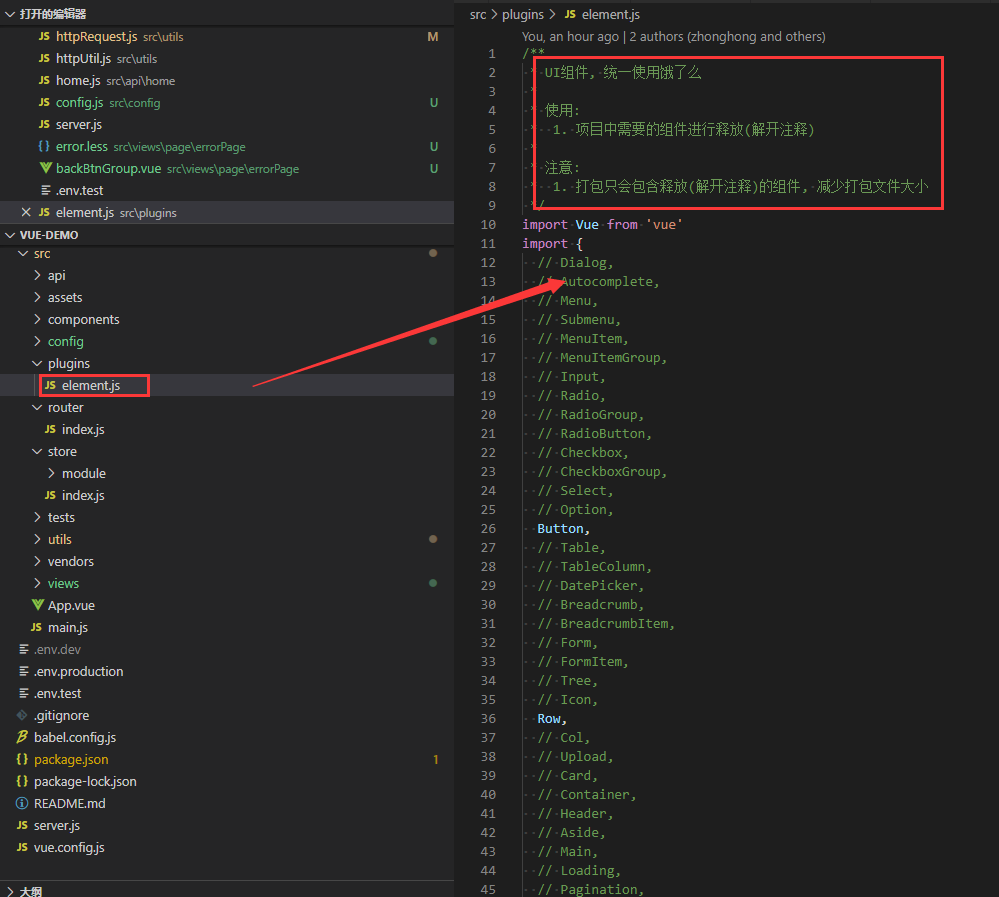
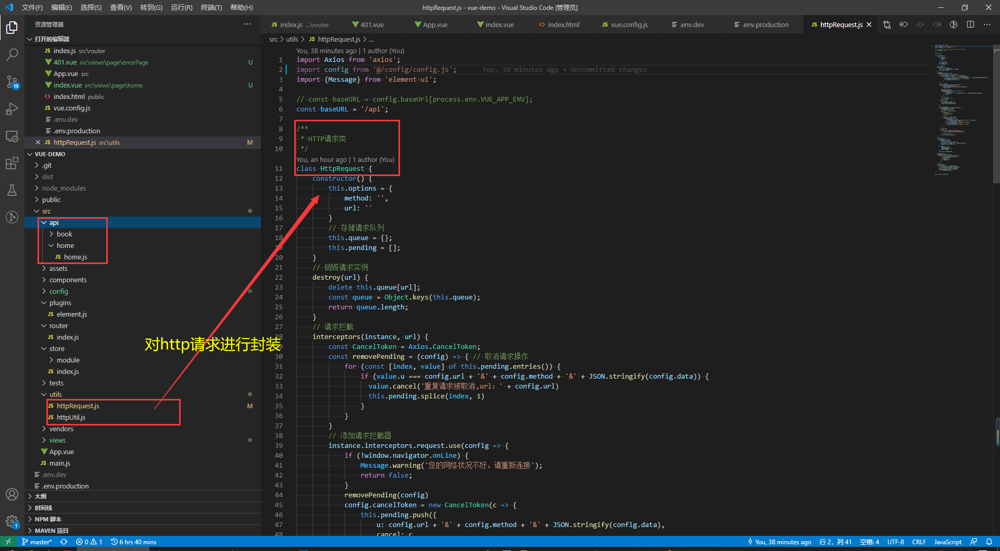
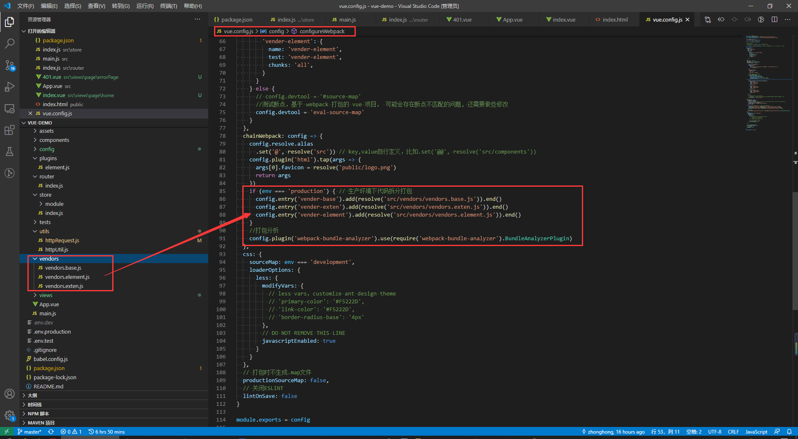

title: 搭建Vue项目
date: 2020-07-15 16:33:52
author: zhonghong
tags:
- Vue
下载地址：http://nodejs.cn/download/
版本要求
node 8.9+
npm install -g @vue/cli
OR
yarn global add @vue/cli检查其版本是否正确：
vue --versionvue create vue-domo结合项目需求，规范了项目结构
├──
├── public 打包所需静态资源
└── src
├── api 后端接口api请求目录
└── assets 项目静态资源
├── css css
└── img 图片资源
├── components 公共组件
├── config 开发相关配置
└── config.js 项目运行配置
├── plugins 第三方插件相关配置
└── element.js element ui配置
├── utils 封装工具函数
├── router 路由配置
├── store Vuex配置
├── vendors 拆分打包配置
├── view 页面文件
├── common 公共模块
├── module 模块
└── page 页面
└── tests 测试相关
└── vue.config.js VUE-CLI配置文件
└── server.js 本地服务器运行生产环境npm i vue-router -Simport Vue from 'vue';
import Router from 'vue-router';
Vue.use(Router)
const router = new Router({
mode: 'hash',
routes: [
{
path: '/',
redirect: '/home'
},
{
path: '/home',
name: 'Home',
component: () => import('@/views/home/index.vue')
},
{
path: '/500',
name: 'error_500',
component: () => import('@/views/errorPage/500.vue')
},
{
path: '/401',
name: 'error_401',
component: () => import('@/views/errorPage/401.vue')
},
{
path: '*',
name: 'error_404',
component: () => import('@/views/errorPage/404.vue')
}
]
})
export default routerimport Vue from 'vue';
import App from './App.vue';
import router from './router';
import store from './store';
// 引入element-UI
import './plugins/element.js';
// 引入公共样式
import '@/assets/css/index.css';
Vue.config.productionTip = false; // 阻止启动生产消息
new Vue({
router,
store,
render: h => h(App),
}).$mount('#app');npm i vuex -Simport Vue from 'vue';
import Vuex from 'vuex';
import app from './module/app';
Vue.use(Vuex);
const debug = process.env.NODE_ENV !== 'production';
export default new Vuex.Store({
modules: {
app
},
strict: debug
})vue add element出现选择全部引入还是按需引入，此时我们选择按需引入，Import on demand
然后选择zh-CN


npm i axios -S
npm install --save-dev less-loader@5.0.0
npm install --save-dev lessnpm install --save-dev compression-webpack-plugin// Begin 生成 gzip 压缩文件
config.plugins.push(
new CompressionWebpackPlugin({
test: productionGzipExtensions,
threshold: 1024, //对超过10k的数据进行压缩
deleteOriginalAssets: false, //是否删除源文件
})
);http:{
gzip on;
gzip_static on;
gzip_buffers 4 16k;
gzip_comp_level 5;
gzip_types text/plain application/javascript text/css application/xml text/javascript application/x-httpd-php image/jpeg image/gif image/png;
}
server {
listen 80;
server_name localhost;
## 用户访问 localhost，则反向代理到https://www.ihuaben.com
location / {
root html;
index index.html index.htm;
proxy_pass https://www.ihuaben.com;
}
}修改 vue.config.js
devServer: {
proxy: {
'/api': {
target: 'http://localhost:8083', // 代理域名 + 端口
ws: true,
changeOrigin: true,
secure: false,
pathRewrite: {
'^/api': ''
}
}
}
}
public class SimpleCORSFilter implements Filter {
public void doFilter(ServletRequest req, ServletResponse res, FilterChain chain) throws IOException, ServletException {
HttpServletResponse response = (HttpServletResponse) res;
response.setHeader("Access-Control-Allow-Origin", "*");
response.setHeader("Access-Control-Allow-Methods", "POST, GET, OPTIONS, DELETE, HEAD");
response.setHeader("Access-Control-Max-Age", "3600");
response.setHeader("Access-Control-Allow-Headers", "access-control-allow-origin, authority, content-type, version-info, X-Requested-With");
chain.doFilter(req, res);
}
public void init(FilterConfig filterConfig) {}
public void destroy() {}
}